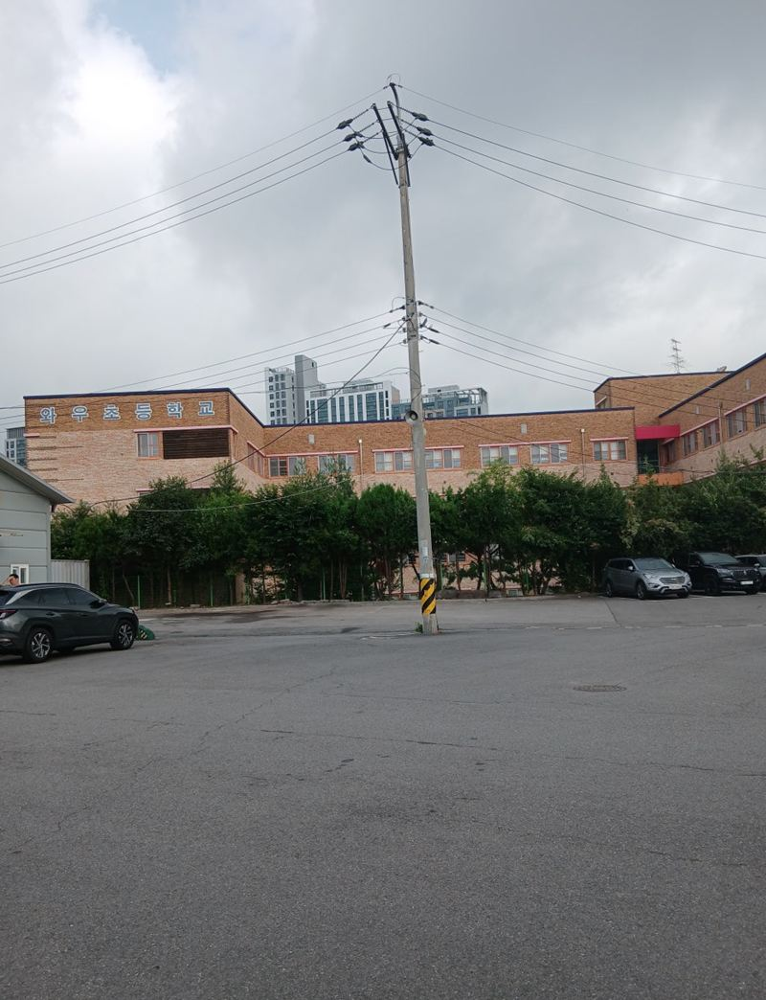
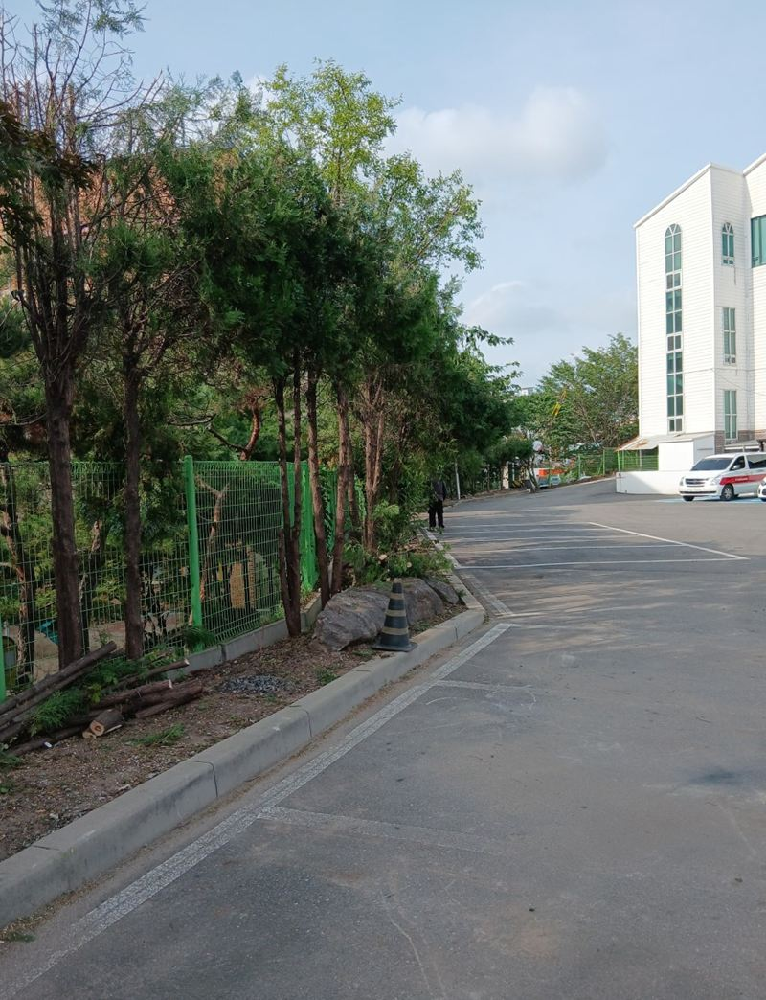
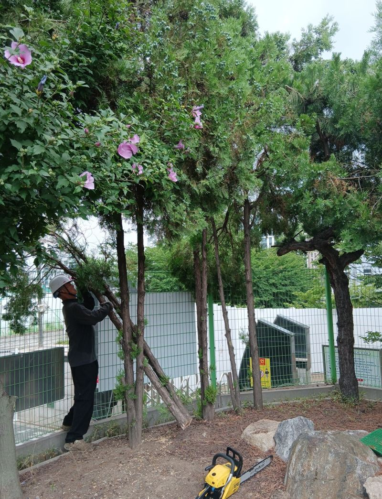
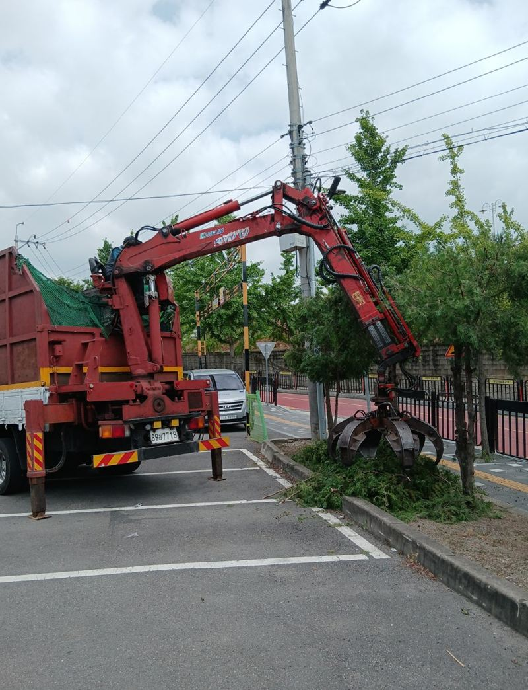
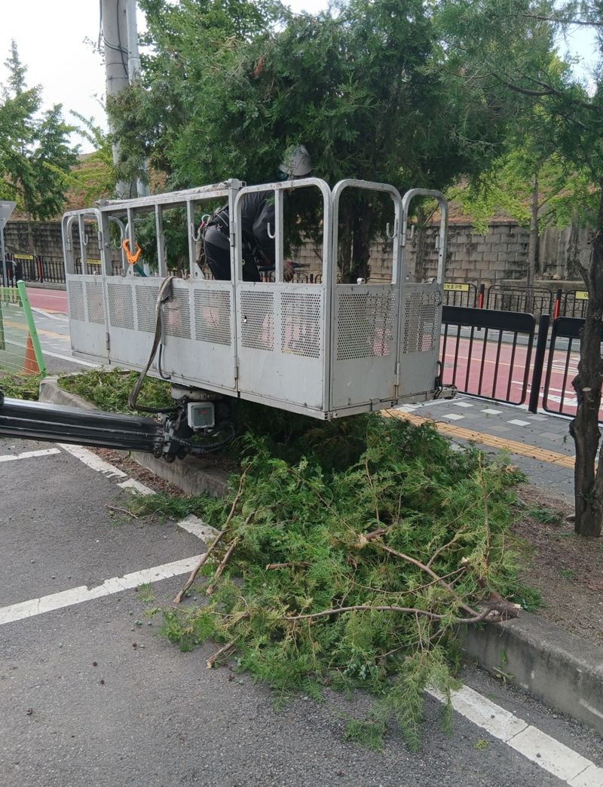
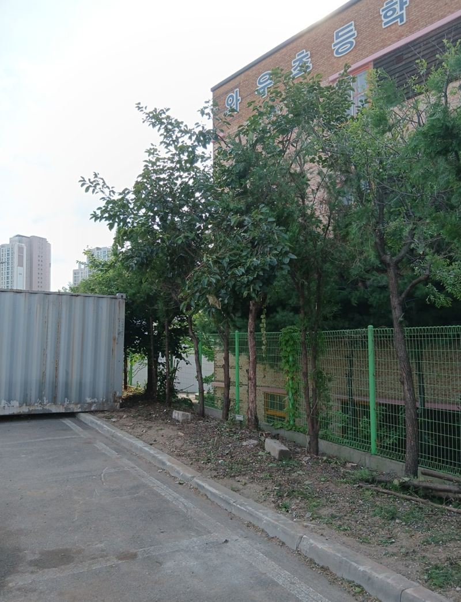
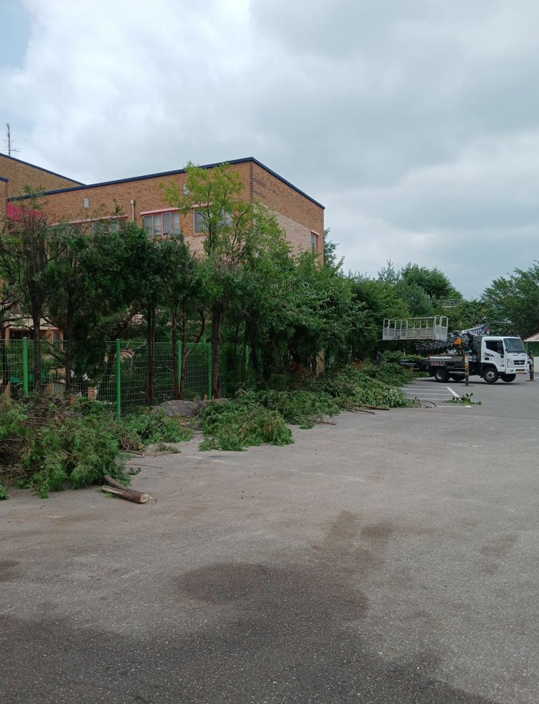

화성 나무 가지치기 작업이 필요한 이유

 작업 전작업 후
작업 전작업 후← 밀어서 전후 비교 →
"나무 몇 그루가 컨테이너 위로 쏠려 있고, 옆 학교 담장 너머로도 가지가 뻗었어요. 바람 센 날마다 조마조마해요." 화성 봉담읍 교회 외부 주차장이었어요. 큰 나무 몇 그루가 건물 쪽으로 기울어 있었고, 굵은 가지는 지붕 위까지 드리워 있었어요. 기울거나 갈라진 나무부터 차례로 베고, 높은 가지는 고소 장비로 잘라 낸 뒤 잔가지와 톱밥까지 모두 실어 냈어요.
| 현장 | 화성 봉담읍 교회 외부 주차장 주변 |
|---|---|
| 문제 | 컨테이너·학교 담장 쪽으로 기운 나무, 지붕 위로 넘어간 굵은 가지 |
| 한 일 | 위험 수목 벌목 → 고소 장비로 높은 가지 절단 → 줄기·가지 수거·차량 이송 → 주차장·도로 청소 |
| 인원 | 3명 |
가지치기를 해야 하는 이유
- 쓰러짐·낙하 사고높이 자란 나무는 강풍에 쓰러지거나 가지가 부러져 떨어져요. 전선이나 지붕 위로 넘어가 있다면 한 번의 바람으로 큰 피해가 나요.
- 나무 건강가지가 빽빽하면 햇빛과 바람이 안 통해 곰팡이와 해충이 늘어요. 죽은 가지를 제때 잘라야 나무도 건강해요.
- 주차·통행주차장이나 길 쪽으로 뻗은 가지는 차를 긁고 시야를 가려요.


위험한 나무 자르는 순서
기운 나무부터 벌목
기울거나 줄기가 갈라진 나무를 먼저 정했어요. 쓰러질 방향을 정하고, 건물과 담장에 닿지 않게 위에서부터 나눠 잘랐어요.
높은 가지는 고소 장비로
손이 닿지 않는 높이의 가지와 줄기는 고소 장비를 써서 잘랐어요. 사다리로 무리하면 작업자도 위험하고 가지가 엉뚱한 곳으로 떨어져요.


수거와 청소
줄기, 가지, 낙엽이 건물 주변에 남지 않게 모아 차량으로 실어 냈어요. 잔가지와 톱밥은 빗자루로 쓸어 주차장과 도로까지 정리했어요.


교회 쪽에서는 "예배나 행사 때 주차도 걱정이었고 나무가 쓰러질까 마음에 걸렸는데, 이유까지 설명해 주고 조심스럽게 해 줘서 속이 시원하다"고 하셨어요.
이런 나무라면 미루지 마세요
| 보이는 모습 | 위험 |
|---|---|
| 줄기가 한쪽으로 기울거나 갈라짐 | 강풍에 쓰러질 수 있음 |
| 바람에 크게 흔들리고 건물과 가까움 | 지붕·창 파손 |
| 전선·옥상·유리창 쪽으로 넘어간 가지 | 정전·낙하 사고 |
| 아래가 주차장·놀이터·보도 | 사람과 차 피해 |
보기 좋게 다듬는 게 목적이 아니라, 사고를 막는 관리예요. 한 번 쓰러진 뒤에는 이미 늦은 경우가 많아요.
작업 날 준비해 주시면 좋은 것
벌목과 가지치기를 할 때는 나무가 쓰러질 방향과 장비 차량이 설 자리가 필요해요. 주차장이라면 작업 구역 근처 차를 미리 옮겨 주시고, 행사나 예배처럼 사람이 많이 모이는 시간은 피해서 일정을 잡는 게 안전해요.
이웃 담장이나 학교 쪽으로 넘어간 가지를 자를 때는 미리 한마디 알려 두시면 좋아요. 작업 중에는 아래로 가지가 떨어지니 근처 통행을 잠시 막고, 끝난 뒤에는 잔가지와 톱밥까지 쓸어 원래대로 돌려 놓아요.
가지치기·벌목 질문
언제 하는 게 좋아요?
장마와 태풍 전에 해 두면 강풍 피해를 줄여요. 새잎이 나기 전도 좋은 시기예요.
나무를 아예 베야 하나요?
건강한 나무는 가지만 정리하고, 죽었거나 크게 기운 나무는 베는 걸 권해요.
전선에 닿은 가지도 자르나요?
전선에 닿은 가지는 한전 등 관리 기관 확인이 필요할 수 있어요. 사진으로 먼저 봐요.
잘라 낸 나무는 어디로 가나요?
이 현장은 모두 모아 차량으로 실어 냈어요. 양에 따라 처리 방법을 정해요.
공동주택 단지도 하나요?
아파트, 교회, 학교, 상가 주차장 등 가리지 않아요.
나무가 몇 그루인지 몰라요.
전체가 나오게 멀리서 한 장, 위험한 나무를 가까이 한 장 찍어 주세요.
가지치기 뒤 나무가 죽지는 않나요?
굵은 가지를 한 번에 너무 많이 자르면 약해질 수 있어요. 남길 나무는 필요한 만큼만 다듬어요.
벌목한 자리 그루터기는 어떻게 하나요?
땅에 가깝게 잘라 걸리지 않게 해요. 뿌리까지 캐야 하면 따로 상의해요.
다른 조경·시설물 현장
나무 전체와 주변 건물·전선이 함께 나오게 찍어 보내 주세요.
전화 상담 010-4517-9872